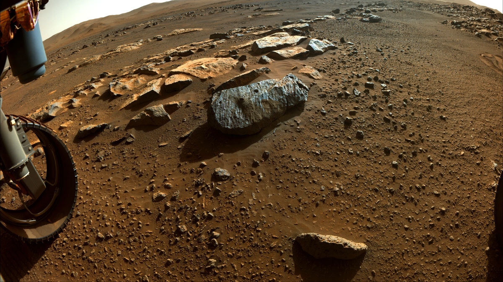
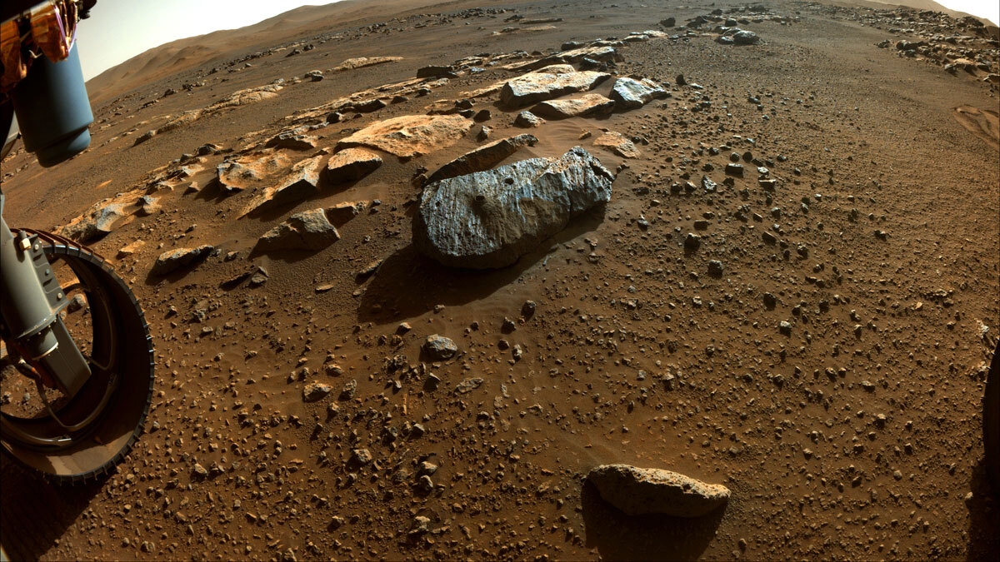

From Nasa, a Color image whose bright white region shows the icy cap that covers Mars’ south pole, composed of frozen water and frozen carbon dioxide.(June 24, 2021)
People can create an artificial magnetic field in the habitable area. A powerful electromagnet can be placed in the habitable area to generate a magnetic field to protect the colonists from the harmful effects of solar radiation, and to establish settlements underground on Mars. The thickness of the Martian soil itself will be a good protection against radiation, but this Greatly restrict activities or work.
The formation of the ecological environment system is the formation of an oxygen-free biosphere on a desolate Martian surface. To form this oxygen-free biosphere, Mars needs sufficient liquid water and the atmosphere can block ultraviolet rays. When the density and thickness of the atmosphere increase, it can not only reduce ultraviolet radiation, but also produce a greenhouse effect and increase the temperature of the surface of Mars. When the surface temperature of Mars increases, it can melt the water ice in the North Pole, and even melt the ice in the permafrost, which can partially solve the problem of liquid water.
When the ecosystem formation phase is over, it will enter the earth environment formation phase. The first step of the earth environment formation phase is to introduce microbes on the earth into some places with better conditions on Mars. The first batch to be introduced must be so-called autotrophic organisms. These autotrophic organisms can use sunlight as an energy source and do not require complex organic matter in the process of metabolism.Some microorganisms can change the atmospheric composition of Mars, especially the nitrogen content. But it is also necessary to introduce plants to increase the oxygen content in the air so that humans can survive on Mars. Later, animals will be introduced to further terraform Mars